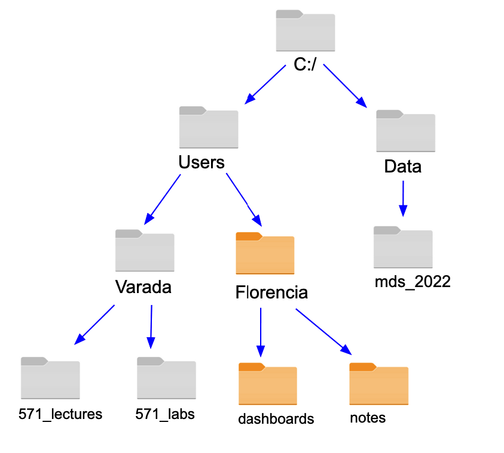

2 Introduction to the Bash Shell
Learning Objectives
- Explain what the Bash shell is and why we use it in data science computing.
- Recognize the directory hierarchy as it is commonly represented in diagrams, paths and in the file explorer software.
- Distinguish common operators and representations of the different filesystem elements typically used in the Bash shell.
- Explore the filesystem using Bash commands as
ls,pwdandcd.
2.1 What is the Bash shell and why do we use it?
In this section we will begin by discussing how we communicate with computers, and end with describing the Bash shell and our rationale for using it in data science computing.
2.1.1 Computer communication
Before we get into practically doing things, I want to give some background to the idea of computing. Essentially, computing is about humans communicating with machines to modulate flows of current in the hardware. Early examples of human computer communication were quite primitive and included actually disconnecting a wire and connecting it again in a different spot.
Luckily, we are not doing this anymore; instead we have graphical user interface with menus and buttons, which is what you are commonly using on your laptop.
These graphical interface can be thought of as a layer (or shell) around the internal components of your operating system. Shells exist as an intermediate that both makes it easy for us to express our thoughts, and for computers to interpret them.
2.1.2 Text-based communication
We will learn how to communicate to a computer via a text-based shell, rather than a graphical one.
Using a text-based shell might at first seems counter-intuitive, since the reason for creating a shell in the first place was to facilitate user interaction with the computer. So now that we have these easy to use graphical user interfaces (GUIs), why would anyone in their right mind go back to using a text based interface?
Well, it’s partly a misconception, GUIs are nice when you are new to something, but text based interfaces are actually faster and easier to use when you know what you are doing.
We can compare it to learning a language, in the beginning it’s nice to look things up in a dictionary (or a menu on the computer), but once I know what I want to say, it is just easer to say or type it directly, instead of looking in submenues.
And by extension, it would be even faster to speak or even just think of what you want to do and have it executed by the computer, this is what speech- and brain-computer interfaces are concerned with.
2.1.3 Bash
Bash is the most commonly used text shell. You have it installed on your computer by default if you are using Mac or Linux machine, and if you are on a Windows machine you downloaded bash as part of the setup instructions. Sometimes we might use “prompt”, “command line”, or “terminal”, which for the purposes of this lecture, refers to the same thing.
The abbreviation BASH stands for Bourne Again SHell. Other shells existed before Bash, and one of the most successful early shells was invented by Stephen Bourne at Bell Labs in 1977, which he called the Bourne Shell. In 1989, the Free Software Foundation improved the Bourne Shell and as a pun named it the Bourne Again Shell, to symbolize it was now “reborn” with new features.
Text-based shells are also called command-line interfaces (CLI). The heart of every CLI is a read-evaluate-print loop (REPL). When we type a command and press Return (also called Enter) the CLI reads the command, evaluates it (i.e., executes it), prints the command’s output, and loops around to wait for another command. Let’s see how to do that next!
2.2 Using the bash shell
When you open the Bash shell you should see $, which is the default prompt character. By default, the prompt character is usually prefixed by several other pieces of information:
- the current username
- hostname of the computer’s system (follows the
@symbol) - the current working directory (where you are currently in the computers operating system)
It often looks like this:
username@hostname:~$Note:
~in the example above indicates the current location is the user’s home directory. This is the default location the Bash shell opens to.
Sometimes the name of the computational environment also prefixes the prompt character. This name usually comes first and is surrounded by parentheses:
(base) [username@localhost ~]$2.2.1 Finding your location in the filesystem
The pwd command stands for “print wording directory”. We use this command to find out where our Bash shell is in the computers filesystem
pwd/home/usernameEach user has a home directory; the function and location of this directory differs a little bit between operating systems. On Linux it is usually /home/username, on MacOS it is /Users/username, and on Windows it will show up as /c/Users/username (if you have Git Bash installed). Our examples in this module shows the Linux directory structure, but you will see that some of the other modules show what we would see on MacOS or Windows.
2.2.2 Viewing the filesystem
The ls command stands for “listing”. We use this command to see what files and folders exist somewhere on our computer using the Bash shell. If we want to see the files and folders that exist in our current working directory all we need to type is ls.
lsDownloads Music
Documents todo.txt
Pictures my_programNote: our results may be different depending on our operating system and what files or directories we have.
We can also use ls to see what files and folders exist in other directories in the computers filesystem by giving ls a path to the directory of interest. For example, imagine we are in the computer’s home directory (as shown above) and we want to see what files and directories are in the Documents directory. To do this we would type:
ls Documentsdsci-310-student
letters
sample-team-work-doc.pdf
textbooks
ubc-mdsSometimes there are files in our computer’s filesystem that are prefixed with ., for example .gitignore, .DS_Store and .ipynb_checkpoints. These are known as hidden files, and your computer’s default is to hide them from you, regardless of whether you use a graphical user interface (e.g., Finder, Explorer, Nautilus) or the Bash shell to explore our computer’s filesystem. To force the Bash shell to show us these files we can use the -a flag/option. For example, if we do this to look in the Documents directory, we see a few new things!
ls -a Documents.
..
.DS_Store
dsci-310-student
letters
sample-team-work-doc.pdf
textbooks
ubc-mdsSome of these are quite uninteresting, for example the .DS_Store file, which is a file only found on Mac operating systems that gets created whenever a directory is viewed with the Finder program. However, . and .. are quite interesting and special to the Bash shell. The first, ., indicates the Bash shell’s current working directory. The second, .., indicates the Bash shell’s parent directory of the current working directory.
2.2.4 Summary table of Bash commands and special characters
Commands for viewing and navigating the filesystem
| Command | Purpose | Example use |
|---|---|---|
pwd |
Print Working Directory | pwd |
ls |
LiSt contents | ls Documents |
cd |
Change Directory | cd Desktop |
Special characters
| Symbol | Definition |
|---|---|
. |
Current working directory |
.. |
Parent directory |
~ |
HOME directory |
$ |
Bash shell prompt |
2.3 Common bash diagrams
In previous courses you may have seen filesystem diagrams represented as a tree structure with icons representing the files and folders contained within the filesystem. An example of one such diagram is shown below:

Another common way a filesystem is often represented in computational documentation is using plain text. Below we recreate the same filesystem using a text-style diagram:
/
├── Users
│ ├── Varada
│ │ ├── 571_lectures
│ │ └── 571_labs
│ └── Florencia
│ ├── dashboards
│ └── notes
└── Data
└── mds2.4 Attribution
This chapter is derived from lecture notes created by Joel Ostblom, Florencia D’Andrea and Daniel Chen for the University of British Columbia’s Master of Data Science DSCI 521 course.